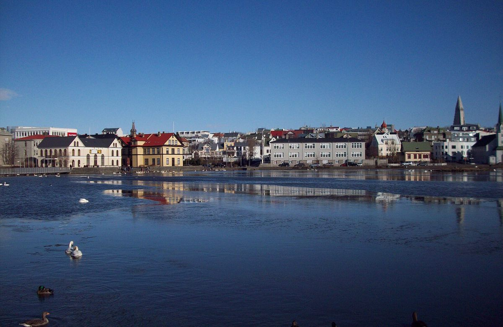
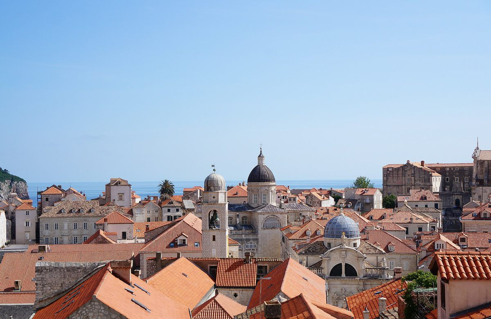
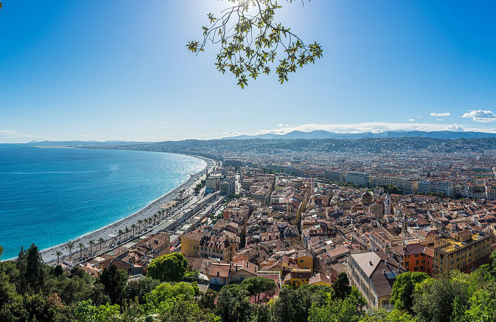
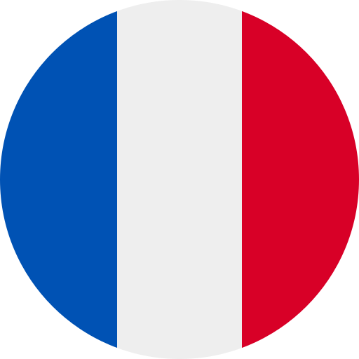
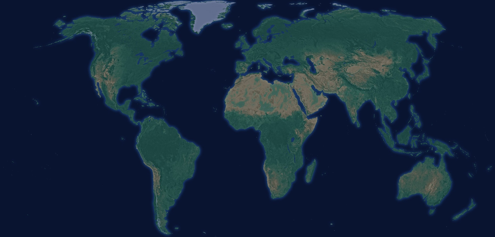
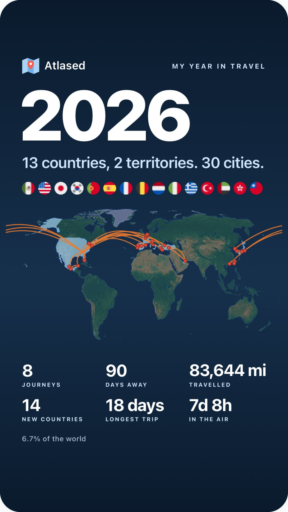

Atlased
Atlased Kyoto, Japan
Kyoto, Japan
Everywhere you've ever been.
Atlased finds your trips in the photos already on your iPhone and turns them into a journal worth keeping. Every country, every city, every journey. In about a minute.

Your photos already know.
Every photo keeps the place and the day it was taken. Atlased reads just that on your iPhone and rebuilds years of travel.
Tap once. Watch your trips appear.
Allow Photos and Atlased does the rest: trips found, grouped into journeys and added for you. Nothing to type.

Every journey, in order.
Each trip keeps its stops, its days and its photos. Flights and hotel stays from your calendar fill in how you got there and where you slept.

Your world, lit up.
Every country and city you've reached, glowing on a 3D globe. See how much of the world is yours, and how many times you've been back.
Unfold your world.
Open it up and your whole atlas spreads out: the globe, your countries, every city you've been.
From Kyoto to Cusco.
Thousands of towns and cities, named on your iPhone. No internet needed.
Kyoto
Reykjavík
Dubrovnik Bangkok
Bangkok New York
New York Tulum
Tulum Sydney
Sydney Istanbul
Istanbul Lisbon
Lisbon

NiceYears of travel, drawn in.
The way there and back and every stop on the way. Your whole travel history on one map.

An example journal. Yours appears the first time you open Atlased.
Your year, wrapped.
One picture of your whole year, made for your Stories.
- Countries & cities you reached
- Every flag you collected
- Miles flown and days away
- Notes and journey names stay private

Send friends the whole trip.
Share a journey as a picture, or the full itinerary with every stop and its days. Pick the best photos from any trip and send them in one go, or turn them into an album in Photos.
- Journey card with the title, cities and dates you choose
- Itinerary as a picture and as text Pro
- Trip photos to friends, or an album in Photos
- Notes and photo details stay private
Your journal stays yours.
No account, no server, no ads. Atlased works on your iPhone, and nothing leaves it unless you share it.
On your iPhone
Trips are found on the device. Your photos are never uploaded.
No account
Open it and start. Nothing to sign up for, nothing to log into.
No ads, no tracking
No analytics, no ad networks. Just your travels.
Works offline
Your journal is always there, even on a plane.
Start with the trips you've already taken.
Made by travelers, for travelers. On the App Store November 20.